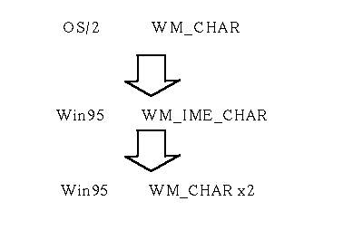

WM_IME_CHAR
Funcional Difference from WIN95
This message is posted to the queue of the Open32 NLS extension.
Functional Difference from SBCS Open32
'N/A'
Implementation
OS/2 MPARAM2 is copied to Win95 MParam.
OS/2 MPARAM1 is translated to Win95 lParam. lKeyData (lParam <= MPARAM1):
Bit 0 - 15 Repeat count:always 1.
Bit 16 - 23 Scan Code: Scan code for complete a FE character
Bit 24 - 28 not used
Bit 29 Context code
Bit 31 Conversion State
In OS/2 environment, OS/2 WM_IME_CHAR is not created, so we must create Win95 WM_IME_CHAR from OS/2 WM_CHAR with above parameters.
In the DefWindowProc,DefFrameProc and DefDlgProc, we must convert Win95 WM_IME_CHAR message into two Win95 WM_CHAR. And the two Win95 WM_CHAR are posted to the internal queue of Open32 NLS extension. So the internal queue of Open32 NLS extension is inc from SBCS Open32..
Behavior using 16 bit IME
You can use this message as same as a 32bit IME.